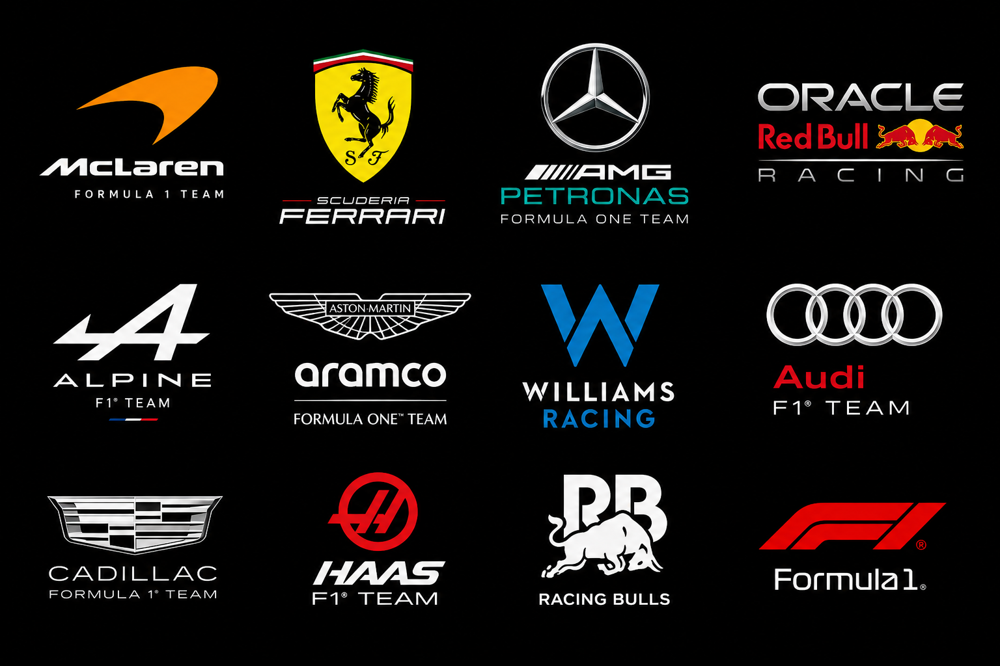

A Formula One constructor is the entity credited with designing the chassis and the engine. If both are designed by the same company, that company receives sole credit as the constructor (e.g., Ferrari). If they are designed by different companies , both are credited, with the name of the chassis designer being placed before that of the engine designer (e.g., McLaren-Mercedes). All constructors are scored individually , even if they share a chassis or engine with another constructor. Entering a new team in the Formula One World Championship requires a $450 million up-front payment to the FIA, which is then shared equally among the existing teams.
The Constructors' Championship is awarded to the most successful constructor over a season, as determined by a points system based on Grand Prix results. The Constructors' Championship was first awarded in 1958, and has been awarded every year since. The Constructors' Championship is considered more prestigious than the Drivers' Championship, as it is seen as a measure of the overall performance of a team, rather than just one driver. The Constructors' Championship is also used to determine the distribution of prize money among teams.

Since 1981, Formula One teams have been required to build the chassis in which they compete. This requirement distinguishes Formula One from series, such as the IndyCar Series, that allows teams to purchase chassis, and "spec series", such as Formula 2, that require all cars be built to identical specifications. Despite this rule, however, two teams used chassis built by other teams in 2007. Super Aguri started the season using a modified Honda Racing RA106 chassis, while Scuderia Toro Rosso used the same chassis used as its parent Red Bull Racing team, which was formally designed by a separate subsidiary. The exploitation of these loopholes was ended for 2010 with the publication of new technical regulations, which require each constructor to own the intellectual property rights to their chassis, and further regulations were introduced in 2014 to prevent teams from using the same chassis.
Ten out of the eleven teams competing in Formula One have some form of base in England, in an area centred around Oxfordshire called "Motorsport Valley". Ferrari is the only team to not have an English presence and have both their chassis and engine assembly in Maranello, Italy. Racing Bulls is based close to Ferrari in Faenza but also has a base in Milton Keynes, whilst Audi is based in Hinwil, Switzerland, with a "technology centre" in Bicester.Haas is U.S.-based and has its primary base in Kannapolis, North Carolina, with another facility in Banbury and a design office in Maranello. Cadillac has bases in Fishers, Indiana, Warren, Michigan, and Silverstone, England.

Mercedes-Benz, a German automotive brand of the Mercedes-Benz Group, has been involved in Formula One as both team owner and engine manufacturer for various periods since 1954. The current Mercedes-Benz Grand Prix Limited, competing as Mercedes-AMG Petronas Formula One Team, is based in Brackley, England, and holds a German racing licence . An announcement was made in December 2020 that Ineos planned to take a one third equal ownership stake alongside the Mercedes-Benz Group and Toto Wolff; this came into effect on 25 January 2022. Mercedes-branded teams are often referred to by the nickname, the "Silver Arrows" (German: Silberpfeile).
Before the Second World War, Mercedes-Benz competed in the European Championship, winning three titles . The marque debuted in Formula One in 1954. After winning their first race at the 1954 French Grand Prix, driver Juan Manue l Fangio won another three Grands Prix to win the 1954 Drivers' Championship and repeated this success in 1955. Despite winning two Drivers' Championships, Mercedes-Benz withdrew from motor racing after 1955 in response to the 1955 Le Mans disaster.
Mercedes returned to Formula One in 1994 as an engine manufacturer in association with Ilmor, a British independent
high-performance autosport engineering company, which developed their engines. The company won
one constructors' title and three drivers' titles in a works partnership with McLaren which lasted
until 2009. In 2005, Ilmor was rebranded as Mercedes AMG High Performance Powertrains. In 2010,
the company bought the Brawn GP team, rebranding it as Mercedes.
Since a major rule shake-up in 2014, which required the use of turbochargers and hybrid electric engines, Mercedes has become one of the most successful teams in Formula One history, winning seven consecutive Drivers' titles from 2014 to 2020 and eight consecutive Constructors' titles from 2014 to 2021, both records. The manufacturer has also collected more than 200 wins as an engine supplier and is ranked second in Formula One history. Twelve Constructors' and fourteen Drivers' Ch ampionships have been won with Mercedes-Benz engines.

Scuderia Ferrari was founded by Enzo Ferrari in 1929 to enter amateur drivers in various races. Ferrari himself had raced in Costruzioni Meccaniche Nazionali and Alfa Romeo cars before that date. The idea came about on the night of 16 November at a dinner in Bologna, where Ferrari solicited financial help from textile heirs Augusto and Alfredo Caniato and wealthy amateur racer Mario Tadini. He then gathered a team which at its peak included over forty drivers, most of whom raced in various Alfa Romeo 8C cars; Ferrari himself continued racing, with moderate success, until the birth of his first son Dino in 1932. The prancing horse blazon first appeared at the 1932 Spa 24 Hours in Belgium on a two-car team of Alfa Romeo 8C 2300 Spiders, which finished first and second
Scuderia Ferrari HP , is the racing division of luxury Italian auto manufacturer Ferrari and the racing team that competes in Formula One racing. The team is also known by the nickname "the Prancing Horse" (Italian: il Cavallino Rampante or simply il Cavallino), in reference to their logo. It is the oldest surviving and most successful Formula One team, having competed in every World Championship since 1950. The team was founded by Enzo Ferrari in 1929, initially to race cars produced by Alfa Romeo. By 1947, Ferrari had begun building its own cars. Among its important achievements outside Formula One are winning the FIA World Endurance Championship, World Sportscar Championship, 24 Hours of Le Mans, 24 Hours of Daytona, 12 Hours of Sebring, 24 Hours of Spa, Targa Florio, and Mille Miglia. Its customers have also secured victories at events including Petit Le Mans, Nürburgring 24 Hours, Bathurst 12 Hour, and Carrera Panamericana.
The team is known for its passionate support base, known as the tifosi. The Italian Grand Prix at Monza is regarded as the team's home race.As a constructor in Formula One, Ferrari has a record 16 Constructors' Championships. Their most recent Constructors' Championship was won in 2008. The team also holds the record for the most Drivers' Championships with 15, won by nine different drivers including Alberto Ascari, Juan Manuel Fangio, Mike Hawthorn, Phil Hill, John Surtees, Niki Lauda, Jody Scheckter, Michael Schumacher, and Kimi Räikkönen. Räikkönen's title in 2007 is the most recent for the team. The 2020 Tuscan Grand Prix marked Ferrari's 1000th Grand Prix in Formula One.
Schumacher is the team's most successful driver. Joining the team in 1996 and driving for them until his first retirement in 2006, he won five consecutive drivers' titles and 72 Grands Prix for the team. His titles came consecutively between 2000 and 2004, and the team won consecutive constructors' titles between 1999 and 2004, marking the era as the most successful period in the team's history. The team's drivers for the 2026 season are Charles Leclerc and seven-time Formula One World Champion Lewis Hamilton.

McLaren Racing Limited, currently competing in Formula One as McLaren Mastercard F1 Team, is a British motor racing team based at the McLaren Technology Centre in Woking, Surrey, The team is a subsidiary of the McLaren Group, wholly owned by Mumtalakat Holding Company.
McLaren is best known as a Formula One chassis constructor, the second-oldest active team and the second-most successful Formula One team after Ferrari, having won 205 races, 13 Drivers' Championships, and 10 Constructors' Championships. McLaren is one of only three constructors, and the only team, to complete the Triple Crown of Motorsport (wins at the Indianapolis 500, 24 Hours of Le Mans, and Monaco Grand Prix). The 2026 Chinese Grand Prix marked McLaren's 1000th Grand Prix entry, making them the second constructor after Ferrari to reach this milestone.
The team currently uses Mercedes power. Its partnership with Honda from 1988 to 1991 produced four consecutive Constructors' Championships; the team won 15 of 16 races in 1988.
Founded by Bruce McLaren in 1963, the team made its Grand Prix debut at the 1966 Monaco Grand Prix, won its first Grand Prix at the 1968 Belgian Grand Prix, and took its first Formula One championships in 1974. Emerson Fittipaldi, James Hunt, Niki Lauda, Alain Prost, Ayrton Senna, Mika Häkkinen, Lewis Hamilton, and Lando Norris have won Drivers' Championships with McLaren. Champions Denny Hulme, Jody Scheckter, Keke Rosberg, Fernando Alonso, Kimi Räikkönen, and Jenson Button also drove for the team at one point during their careers. The team's most recent titles were secured in 2025.
McLaren also has a history in sports car and endurance racing, with a modified McLaren F1 road car winning the 24 Hours of Le Mans in 1995. The team is set to reenter the FIA World Endurance Championship in 2027 with an LMDh entry, the McLaren MCL-HY. The team has also had experience in American open wheel racing as both an entrant and a chassis constructor, and has won the Canadian-American Challenge Cup (Can-Am) sports car racing championship. Their current IndyCar entry, Arrow McLaren, has won 10 races since its takeover of Sam Schmidt Motorsports in 2020.
McLaren has previously entered the electric motorsports Formula E and Extreme E, though they achieved less success there than their other ventures and ended up pulling out of both. McLaren also participates in Formula One esports, in which they won the 2022 championship.

The team began using Honda engines in 2019.[15] The works Honda partnership culminated in 2021, following Red Bull driver Max Verstappen's World Drivers' Championship victory, with Verstappen also winning the championship in 2022, 2023, and 2024; he missed out to Lando Norris in 2025. Red Bull also won two Constructors' Championship titles in 2022 and 2023, but lost out in 2021 to Mercedes and in 2024 and 2025 to McLaren. Honda left the sport officially after 2021 but continued to supply complete engines from Japan to the team partly under Red Bull Powertrains branding until the end of 2025.Following the conclusion of their partnership with Honda, Red Bull switched to Ford engines in 2026 after having signed a deal to use their engines in 2023.Red Bull have a new wind tunnel due to be operational by 2026.
Red Bull had Cosworth engines in 2005 and Ferrari engines in 2006. The team used engines supplied by Renault between 2007 and 2018 (from 2016 to 2018, the Renault engine was re-badged TAG Heuer following the breakdown in the relationship between Red Bull and Renault in 2015). During this partnership, they won four successive Drivers' and Constructors' Championship titles in 2010, 2011, 2012, and 2013, led by Red Bull driver Sebastian Vettel, and becoming the first Austrian team to win the title
Red Bull Racing Limited,currently competing as Oracle Red Bull Racing and also known simply as Red Bull or RBR, is a Formula One racing team, competing under an Austrian racing licence and based in England. It is one of two Formula One teams owned by conglomerate Red Bull GmbH, the other being Racing Bulls. The Red Bull Racing team was managed by Christian Horner from its formation in 2005 until 2025, when he departed the team and was replaced by Laurent Mekies.
hr width="700">
Racing Bulls S.p.A., competing as Visa Cash App Racing Bulls Formula One Team (shortened to Racing Bulls or VCARB), is an Italian Formula One racing team and constructor that has been competing since the 2024 season. It is one of two Formula One constructors owned by Austrian conglomerate Red Bull GmbH, the other being Red Bull Racing. The team is based in Faenza and has a base in Milton Keynes near its sister team.
Known as Scuderia Toro Rosso from 2006 to 2019 and Scuderia AlphaTauri from 2020 to 2023, the team was rebranded to RB for the 2024 season, and then switched to Racing Bulls in 2025.
The current CEO is Peter Bayer, and the team principal is Alan Permane. At the start of the 2024 season, the team retained incumbent drivers Daniel Ricciardo and Yuki Tsunoda from when it was known as AlphaTauri; Ricciardo was dropped after the 2024 Singapore Grand Prix and was replaced with Red Bull junior and reserve driver Liam Lawson.Lawson was promoted to the main Red Bull team for 2025, with Formula 2 graduate Isack Hadjar taking his place at Racing Bulls. Lawson was subsequently dropped from the Red Bull team after two races and returned to Racing Bulls, with Tsunoda promoted to the senior team. The team scored their first podium as Racing Bulls at the 2025 Dutch Grand Prix.
As of 2026, Racing Bulls through its previous legacy lineages (Minardi, Toro Rosso and AlphaTauri) is the longest-surviving active Formula One team that never won a Drivers' or Constructors' World Championship title.

Williams Grand Prix Engineering Limited, competing in 2026 as Atlassian Williams F1 Team,is a British Formula One team and constructor. It was founded by Frank Williams and Patrick Head. The team was formed in 1977 after Frank Williams's earlier unsuccessful F1 operation, Frank Williams Racing Cars (which later became Wolf-Williams Racing in 1976). The team is based in Grove, Oxfordshire, on a 60-acre (24 ha) site.
The team's first race was the 1977 Spanish Grand Prix, where the new team ran a March chassis for Patrick Nève. Williams started manufacturing its own cars the following year, and Clay Regazzoni won Williams's first race at the 1979 British Grand Prix. At the 1997 British Grand Prix, Jacques Villeneuve scored the team's 100th race victory, making Williams one of only five teams in Formula One, alongside Ferrari, McLaren, Mercedes, and Red Bull Racing to win 100 races. Williams won nine Constructors' Championships between 1980 and 1997. This was a record until Ferrari won its tenth championship in 2000
Williams have worked with many engine manufacturers, most successfully with Renault, winning five of their nine Constructors' titles with the company. Along with Ferrari, McLaren, and Renault (formerly Benetton), Williams is one of a group of "Big Four" teams that won every Constructors' Championship between 1979 and 2008 and every Drivers' Championship from 1984 to 2008. Williams also has business interests beyond Formula One. They have established Williams Advanced Engineering and Williams Hybrid Power, who take technology originally developed for Formula One and adapt it for commercial applications. In April 2014, Williams Hybrid Power was sold to GKN. In May 2020, Williams announced they were seeking buyers for a portion of the team due to poor financial performance in 2019 and that they had terminated the contract of title sponsor ROKiT. On 21 August 2020, Williams was acquired by Dorilton Capital. Frank and Claire Williams stepped down from being Manager and Deputy Manager of the team on 6 September 2020, with the 2020 Italian Grand Prix being their last time in their respective positions.

Haas Formula LLC, competing as TGR Haas F1 Team, is an American-licensed Formula One (F1) racing team established by NASCAR Cup Series team owner Gene Haas in April 2014. The team made its debut in the 2016 season. The team principal is Ayao Komatsu, who replaced Guenther Steiner who served in the role from the team's inception until his resignation in January 2024.
Haas is headquartered in Kannapolis, North Carolina, United States, 31 mi (50 km) from Charlotte, alongside sister team and NASCAR entrant Haas Factory Team, although the two teams are separate entities. The team also established a forward base in Banbury, England, to turn cars around between races during the European part of the calendar. The team maintains a design office in Maranello, which is also home to Scuderia Ferrari's headquarters.
Haas was the first American constructor to submit an F1 entry after the failed US F1 project in 2010,[15] and is the first American constructor to compete since the unrelated Haas Lola outfit raced in the 1985 and 1986 seasons. The Haas Lola team was owned by former McLaren boss Teddy Mayer and Carl Haas, who was not related to Gene Haas. Following the collapse of Marussia F1 during the 2014 season and the auctioning of their assets, Haas purchased the team's Banbury headquarters to serve as a forward base for their operations.

The American car manufacturer General Motors (GM) has been a Formula One constructor under the luxury Cadillac brand as Cadillac Formula 1 Team since 2026 and is expected to become a power unit manufacturer starting in 2029. GM collaborates with American motorsport organization TWG Motorsports through the latter's British subsidiary, TWG Cadillac Formula 1 Team Limited.
Cadillac became the first new, independent constructor to join the grid since Haas in 2016. The project has three bases in the United States—in Fishers, Indiana; Concord, North Carolina; and Warren, Michigan—as well as a British base in Silverstone. The engine department will be based in North Carolina.
In January 2023, General Motors (GM) and the Michael Andretti-led Andretti Global announced their intention to enter GM's Cadillac brand into the Formula One World Championship.The FIA approved their bid but the Formula One Group vetoed it, explaining that it would reconsider its decision if GM agreed to manufacture Formula One engines. Following the rejection, Andretti continued to build up the team and operations using Toyota's wind tunnel in Cologne,which McLaren had recently vacated.

German car manufacturer Audi has competed in Formula One as a constructor and power unit manufacturer since 2026. Their current iteration, Audi Motorsport AG, competing as Audi Revolut F1 Team, was formed through the acquisition of Sauber Motorsport, with power units developed by Audi Formula Racing GmbH.
Prior to World War II, Audi's predecessor Auto Union contested Grand Prix motor racing from 1935 to 1939. Audi announced their intention to acquire Sauber—who debuted in 1993—and its Swiss facilities in 2022, ahead of new power unit and chassis regulations in 2026. The project expanded to a power unit facility in Bavaria and a technology centre in the "Motorsport Valley" of Oxfordshire, England.
In August 2022, Audi announced that it would enter Formula One as a power unit manufacturer in 2026—the planned year for a regulation overhaul.That October, Audi confirmed its rumoured partnership with Sauber, acquiring a stake in the company for a full rebrand and power unit deal. In November 2024, the Qatar Investment Authority purchased a minority stake in the team. The investment was described as a "substantial minority" stake in Sauber Holding AG, with Audi and QIA stating that the funding would support the expansion of personnel and facilities ahead of the team's planned 2026 entry.

Aston Martin is a British car manufacturer that has participated in Formula One in various iterations. The current team is represented by AMR GP Limited and is competing as Aston Martin Aramco Formula One Team
The company first participated in Formula One during the 1959 season, where they debuted the DBR4 chassis using their own engine, but it failed to score any points. They continued to perform poorly through the 1960 season, once again failing to score any points. As a result, Aston Martin decided to leave after 1960.
A commercial rebranding of the Racing Point F1 Team, owned by Lawrence Stroll through AMR GP Limited (who is also a shareholder of Aston Martin Lagonda), resulted in the constructor's return in 2021 as a Mercedes power units customer. In 2026, the team began using Honda power units as part of a works partnership with the Japanese manufacturer. The team has two-time World Drivers' Champion Fernando Alonso and Lance Stroll as the drivers pairing since the 2023 season. The team is headquartered in Silverstone and has previously raced under various different names, starting as Jordan Grand Prix in 1991.

Alpine Racing , currently racing as BWT Alpine Formula One Team for sponsorship reasons, is the name under which the Enstone-based Formula One team has been competing since the start of the 2021 Formula One World Championship. Formerly named Renault F1 Team and owned by the French automotive company Groupe Renault as well as Renault–Nissan–Mitsubishi Alliance, the team was rebranded for 2021 to promote Renault's sports car brand, Alpine, and continued to serve as Renault's works team, a position the team kept until Renault pulled out of Formula One (as an engine manufacturer) at the end of 2025. The team is currently owned by Groupe Renault and the majority of its shares are held by the Renault Group, with minority stakes held by the French state and other investors.
The team is based in Enstone, Oxfordshire, England, and has a factory in Viry-Châtillon, France.
The team uses Mercedes engines, having previously done so as Lotus in 2015. The team is based in Enstone, Oxfordshire, England and competes with a French licence. The team fields Pierre Gasly and Franco Colapinto as its full-time drivers. In its current form as Alpine, the team's sole win was achieved by Esteban Ocon at the 2021 Hungarian Grand Prix, and its first pole position was achieved by Gasly at the 2026 Italian Grand Prix.